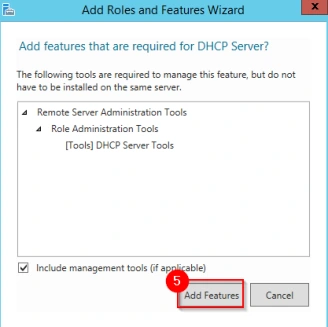
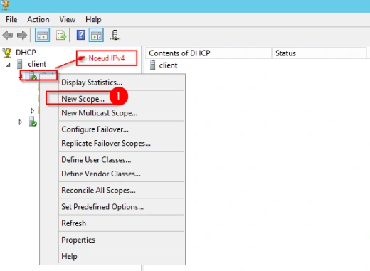
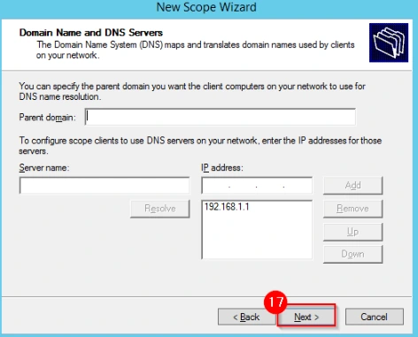

Le support est transcrit et structuré pour la lecture. Les valeurs secrètes et les noms propres au centre de formation sont neutralisés dans les exemples concernés.
Cette démonstration décrit les différentes étapes relatives à l’installation du service DHCP sur une machine virtuelle Windows.
Avoir installé et configuré une VM Windows Server.
Lors de l’accès à la session du serveur, le Gestionnaire de Serveur ou Serveur Manager se lance automatiquement.
Pour lancer la console permettant l’ajout d’un rôle, cliquer sur Manage ou Gérer (1) puis sur Add Roles and Features ou Ajout de Rôles et Fonctionnalités (2).
Cliquer sur le bouton Next (1), puis encore une fois sur le bouton Next (2). Sur l’écran Select destination server cliquer sur le bouton Next (3). Sur l’écran Select server roles, cocher la case DHCP Server (4). Sur la fenêtre contextuelle qui vient d’apparaître, cliquer sur le bouton Add Features (5), puis sur le bouton Next (6). Sur l’écran Select Features, cliquer sur le bouton Next (7). Sur l’écran DHCP Server, cliquer sur le bouton Next (8). Continuer jusqu’à la finalisation du rôle.

Dès lors que l’installation est terminée, un « flag » jaune apparaît sur le dashboard du serveur (1). Cliquer sur le « flag » puis sur le lien Complete DHCP configuration (2). Sur l’écran Description, cliquer sur le bouton Commit (3). Enfin, cliquer sur le bouton Close (4).
Ouvrir Administrative Tools, puis créer le raccourci DHCP (1) dans la barre des tâches (2).
Cliquer sur le raccourci précédemment créé afin d’ouvrir la console DHCP. Faire un clic droit sur le nœud IPv4 puis sur le menu New Scope (1). Cliquer sur le bouton Next (2). Indiquer dans les input box Name et Description (3) un nom et une description pour l’étendue, puis cliquer sur le bouton Next (4).
Indiquer une adresse de début pour l’étendue ainsi qu’une adresse de fin (5), vérifier que le masque indiquer est le bon (6) et cliquer sur le bouton Next (7). S’il est requis d’avoir une plage d’adresses exclues, indiquer une adresse de début et de fin (8), puis cliquer sur le bouton Add (9) et cliquer sur le bouton Next (10). Si besoin, la durée du bail peut être modifiée (11), ensuite cliquer sur le bouton Next (12). Cliquer sur le bon Next (13). Indiquer si besoin l’adresse de la passerelle par défaut que les clients obtiendront via leur bail (14) puis cliquer sur le bouton Add (15) et cliquer sur le bouton Next (16). Cliquer sur le bouton Next (17). Cliquer sur le bouton Next (18). Cliquer sur le bouton Next (19). Enfin, cliquer sur le bouton Finish (20).

